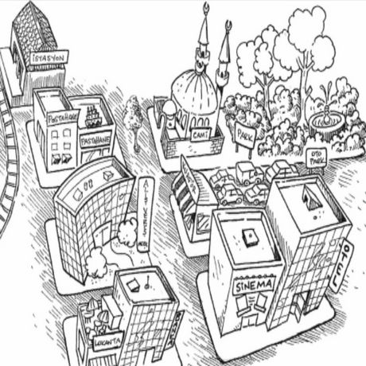

Словообразовательный аффикс - ki. На уроке вы научитесь делать из
существительных прилагательные. Ещё плюс миллион баллов к вашему
словарному запасу и красноречию.
Да
evet
Итоговый тест к уроку 17
1. Как это будет звучать на турецком языке: Я всегда смотрю
вечерние новости.
2. Как это будет звучать на турецком языке: Я лечу в Стамбул
ночным самолетом.
3. Как это будет звучать на турецком языке: Номера в этом отеле
очень комфортные.
4. Как это будет звучать на турецком языке: Я хочу купить
платье, которое находится на витрине.
5. Как это будет звучать на турецком языке: Я очень жду концерт
на следующей неделе.
6. Как это будет звучать на турецком языке: У меня нет словаря,
поэтому я беру твой.
7. Как это будет звучать на турецком языке: На моем компьютере
нет интернета, на твоем есть?
8. Найдите неверное предложение согласно картинке.

9. Найдите неверное предложение согласно картинке.
10. Найдите неверное предложение согласно картинке.